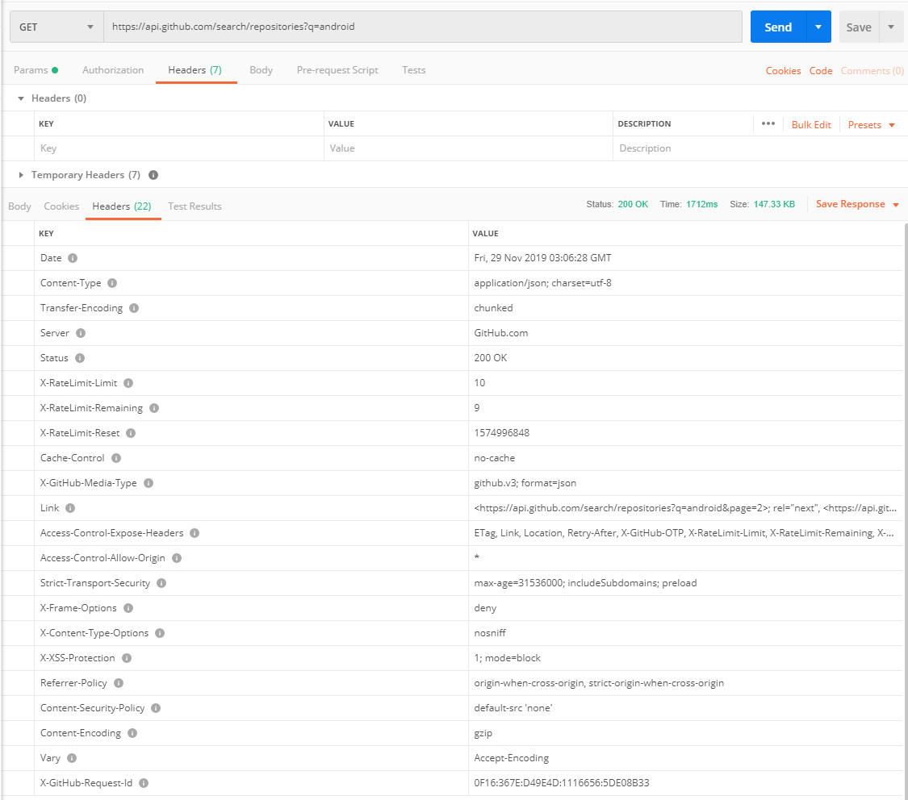

Retrofit 2.5 框架使用与源码分析
Retrofit 框架使用
请求内容与返回值
使用PostMan进行请求测试
请求：https://api.github.com/search/repositories?q=android
返回值：
Header: 
Body:
{
"total_count": 943593,
"incomplete_results": false,
"items": [
{
"id": 82128465,
"node_id": "MDEwOlJlcG9zaXRvcnk4MjEyODQ2NQ==",
"name": "Android",
"full_name": "open-android/Android",
"private": false,
"owner": {
"login": "open-android",
"id": 23095877,
"node_id": "MDQ6VXNlcjIzMDk1ODc3",
"avatar_url": "https://avatars2.githubusercontent.com/u/23095877?v=4",
//……
},
"html_url": "https://github.com/open-android/Android",
"description": "GitHub上最火的Android开源项目,所有开源项目都有详细资料和配套视频",
"fork": false,
"url": "https://api.github.com/repos/open-android/Android",
//……
},
{
"id": 12544093,
"node_id": "MDEwOlJlcG9zaXRvcnkxMjU0NDA5Mw==",
"name": "Android",
"full_name": "hmkcode/Android",
"private": false,
"owner": {
"login": "hmkcode",
"id": 3790597,
//……
},
//……
}
]
}
引入Retrofit依赖
implementation 'com.squareup.retrofit2:retrofit:2.5.0'
implementation 'com.squareup.retrofit2:converter-gson:2.5.0'
根据返回的请求结果定义Repository Bean类
返回的报文采用google.gson进行处理，金处理必要的值
public class RepoBean {
//用于表示Repo id
private int id;
//用于表示RepoName
private String name;
//用于表示完整名称
//Repository中json的返回值为 `full_name`，与定义的变量名不一致，使用注解`@SerializedName`进行标注
@SerializedName("full_name")
private String fullName;
//省略getter和setter
//……
}
根据返回的请求结果定义一次查询结果
public class SearchRepoBean {
//用于表示仓库数量
@SerializedName("total_count")
private int totalCount;
//用于表示是否为完整结果
private boolean incompleteResults;
//用于表示持有的所有的仓库类
private List<RepoBean>items;
//省略getter和setter
//……
}
定义网络请求API接口
public interface GithubService {
//@Get注解，表示以Get方法发送网络请求
//返回类型为Call<SearchRepoBean>，SearchRepoBean是接收数据的类，可以自定义
@GET("search/repositories")
Call<SearchRepoBean> getRepoInfo(@Query("q") String query);
}
初始化Retrofit实例，生成接口实现类
Retrofit retrofit = new Retrofit.Builder()
.baseUrl("https://api.github.com/") //设置网络请求的URL地址
.addConverterFactory(GsonConverterFactory.create()) //设置数据解析器
.build();
githubService = retrofit.create(GithubService.class);
进行网络请求
Call<SearchRepoBean> call = githubService.getRepoInfo("Android");
//同步请求方式
//call.request();
//异步请求方式
call.enqueue(new Callback<SearchRepoBean>() {
@Override
public void onResponse(Call<SearchRepoBean> call, Response<SearchRepoBean> response) {
//输出请求结果
// LogUtils.printInfo("搜索到的仓库的数量：" + response.body().getItems().size());
// List<RepoBean>repoBeans=new ArrayList<>();
// repoBeans.addAll(response.body().getItems());
// for (int i=repoBeans.size()-1;i>=0;i--){
// LogUtils.printInfo(repoBeans.get(i).getFullName());
// }
}
@Override
public void onFailure(Call<SearchRepoBean> call, Throwable t) {
}
});
将请求值的返回设为LiveData
将请求的返回值设为LiveData可以通过为Retrofit添加CallAdapterFactory来实现
public interface GithubService {
@GET("search/repositories")
LiveData<SearchRepoBean> getRepoInfo(@Query("q") String query);
}
自定义LiveDataCallAdapterFactory
public class LiveDataCallAdapterFactory extends CallAdapter.Factory {
@Override
public CallAdapter<?, ?> get(Type returnType, Annotation[] annotations, Retrofit retrofit) {
//用于获取泛型的参数
Type observerType = getParameterUpperBound(0, (ParameterizedType) returnType);
Class<?> rawObserverType = getRawType(observerType);
LiveDataCallAdapter<Object> liveDataCallAdapter = new LiveDataCallAdapter<>(rawObserverType);
return liveDataCallAdapter;
}
}
自定义 LiveDataCallAdapter
public class LiveDataCallAdapter<R> implements CallAdapter<R, LiveData<SearchRepoBean>> {
private Type responseType;
public LiveDataCallAdapter(Type responseType){
this.responseType=responseType;
}
@Override
public Type responseType() {
return responseType;
}
@Override
public LiveData<SearchRepoBean> adapt(final Call<R> call) {
LiveData<SearchRepoBean>searchRepoBeanLiveData=new LiveData<SearchRepoBean>() {
@Override
protected void onActive() {
super.onActive();
call.enqueue(new Callback<R>() {
@Override
public void onResponse(Call<R> call, Response<R> response) {
postValue((SearchRepoBean) response.body());
}
@Override
public void onFailure(Call<R> call, Throwable t) {
LogUtils.printInfo("error");
}
});
}
};
//这里的return 即为下文中githubService.getRepoInfo("Android")调用的返回值
return searchRepoBeanLiveData;
}
}
为Retrofit实例添加CallAdapterFactory
Retrofit retrofit = new Retrofit.Builder()
.baseUrl("https://api.github.com/")
.addConverterFactory(GsonConverterFactory.create())
.addCallAdapterFactory(new LiveDataCallAdapterFactory())
.build();
调用方法
repoBeanLiveData = githubService.getRepoInfo("Android");
repoBeanLiveData.observe(GithubApiActivity.this, new Observer<SearchRepoBean>() {
@Override
public void onChanged(SearchRepoBean searchRepoBean) {
//输出结果
}
});
添加通用的响应实体
通过LiveDataCallAdapter 和LiveDataCallAdapterFactory 可以将返回的数据表示为LiveData数据形式，且只能对返回结果为SearchRepoBean类型的JSON字符串进行处理。如果是返回其他的实体则需要重新构造适配器。
定义一个通用的响应实体
public class ApiResponse<T> {
public ApiResponseSuccess<T> create(Response<T> response) {
if (response.isSuccessful()) {
return new ApiResponseSuccess<T>(response.body());
} else {
return null;
}
}
//用于表示返回成功的值
public static class ApiResponseSuccess<T> extends ApiResponse<T> {
/用于表示请求返回成功的内容，在本代码中是SearchRepoBean
private T body;
public ApiResponseSuccess(T body) {
this.body = body;
}
public T getBody() {
return body;
}
}
}
修改LiveDataCallAdapterFactory
public class LiveDataCallAdapterFactory extends CallAdapter.Factory {
@Override
public CallAdapter<?, ?> get(Type returnType, Annotation[] annotations, Retrofit retrofit) {
//用于获取泛型的参数
//return type为LiveData<ApiResponse<SearchRepoBean>>
//observerType为ApiResponse<SearchRepoBean>
Type observerType = getParameterUpperBound(0, (ParameterizedType) returnType);
//bodyType为SearchRepoBean
Type bodyType = getParameterUpperBound(0, (ParameterizedType) observerType);
LiveDataCallAdapter<Object> liveDataCallAdapter = new LiveDataCallAdapter<>(bodyType);
return liveDataCallAdapter;
}
}
修改LiveDataCallAdapter
public class LiveDataCallAdapter<R> implements CallAdapter<R,LiveData<ApiResponse<R>>> {
private Type responseType;
public LiveDataCallAdapter(Type responseType){
this.responseType=responseType;
}
@Override
public Type responseType() {
return responseType;
}
@Override
public LiveData<ApiResponse<R>> adapt(final Call<R> call) {
LiveData<ApiResponse<R>> result=new LiveData<ApiResponse<R>>() {
@Override
protected void onActive() {
super.onActive();
call.enqueue(new Callback<R>() {
@Override
public void onResponse(Call<R> call, Response<R> response) {
postValue(new ApiResponse<R>().create(response));
}
@Override
public void onFailure(Call<R> call, Throwable t) {
// LogUtils.printInfo("+++++!2312qwqweww31");
}
});
}
};
return result;
}
}
修改调用方法
repoBeanLiveData = githubService.getRepoInfo("Android");
repoBeanLiveData.observe(GithubApiActivity.this, new Observer<ApiResponse<SearchRepoBean>>() {
@Override
public void onChanged(ApiResponse<SearchRepoBean> searchRepoBeanApiResponse) {
SearchRepoBean searchRepoBean = (SearchRepoBean) ((ApiResponse.ApiResponseSuccess) searchRepoBeanApiResponse).getBody();
//输出结果
}
});
源码详解
Retrofit构建中的.baseUrl("https://api.github.com/")介绍
Retrofit源碼，Retrofit在源码中使用建造者模式进行实例化，将String类型的地址转换为OKhttp3中的HttpUrl类型
public final class Retrofit {
public static final class Builder {
public Builder baseUrl(String baseUrl) {
checkNotNull(baseUrl, "baseUrl == null");
return baseUrl(HttpUrl.get(baseUrl));
}
public Builder baseUrl(HttpUrl baseUrl) {
checkNotNull(baseUrl, "baseUrl == null");
List<String> pathSegments = baseUrl.pathSegments();
if (!"".equals(pathSegments.get(pathSegments.size() - 1))) {
throw new IllegalArgumentException("baseUrl must end in /: " + baseUrl);
}
this.baseUrl = baseUrl;
return this;
}
}
}
Retrofit构建中的.addConverterFactory(GsonConverterFactory.create())
通过.addConverterFactory()传入我们需要的ConverFactory，目的是将responseBody转换成我们的Bean类，在这里我们使用的是GsonConverterFactory
public Builder addConverterFactory(Converter.Factory factory) {
converterFactories.add(checkNotNull(factory, "factory == null"));
return this;
}
Converter接口源码，核心是T convert(F value),将F类型的数据转换为T类型
public interface Converter<F, T> {
//将F类型的数据转换为T类型
@Nullable T convert(F value) throws IOException;
//根据数据类型创建Converter创建 Converter
abstract class Factory {
//将HTTP响应的body体转换成type,type是由CallAdapter 接口里面的responseType()函数返回的。
public @Nullable Converter<ResponseBody, ?> responseBodyConverter(Type type,
Annotation[] annotations, Retrofit retrofit) {
return null;
}
//将API方法的输入参数使用注解@Body, @Part 和 @PartMap标记的类型，从type转换为RequestBody
public @Nullable Converter<?, RequestBody> requestBodyConverter(Type type,
Annotation[] parameterAnnotations, Annotation[] methodAnnotations, Retrofit retrofit) {
return null;
}
//将API方法的输入参数使用注解@Header, @HeaderMap, @Path, @Query 和 @QueryMap 标记的类型从type转换为String
public @Nullable Converter<?, String> stringConverter(Type type, Annotation[] annotations,
Retrofit retrofit) {
return null;
}
protected static Type getParameterUpperBound(int index, ParameterizedType type) {
return Utils.getParameterUpperBound(index, type);
}
protected static Class<?> getRawType(Type type) {
return Utils.getRawType(type);
}
}
}
Retrofit构建中的.addCallAdapterFactory(new LiveDataCallAdapterFactory())
用于添加数据适配器，在HttpServiceMethod实例生成的时候会调用
public final class Retrofit {
final List<CallAdapter.Factory> callAdapterFactories;
//…………
public Builder addCallAdapterFactory(CallAdapter.Factory factory) {
callAdapterFactories.add(checkNotNull(factory, "factory == null"));
return this;
}
//…………
}
最终用来创建Service的代码retrofit.create(GithubService.class)
create()采用代理的方式进行创建，
public final class Retrofit {
//……
public <T> T create(final Class<T> service) {
//判断定义的接口服务是否可用
Utils.validateServiceInterface(service);
if (validateEagerly) {
eagerlyValidateMethods(service);
}
return (T) Proxy.newProxyInstance(service.getClassLoader(), new Class<?>[] { service },
new InvocationHandler() {
private final Platform platform = Platform.get();
private final Object[] emptyArgs = new Object[0];
@Override public Object invoke(Object proxy, Method method, @Nullable Object[] args)
throws Throwable {
// 如果是Object本身的方法，正常调用后返回
if (method.getDeclaringClass() == Object.class) {
return method.invoke(this, args);
}
//如果是platform默认的方法，正常调用后返回
if (platform.isDefaultMethod(method)) {
return platform.invokeDefaultMethod(method, service, proxy, args);
}
//解析我们定义的网络请求的方法
return loadServiceMethod(method).invoke(args != null ? args : emptyArgs);
}
});
}
//……
}
loadServiceMethod(Method method)源码解析,其实际上是HttpServiceMethod对象
ServiceMethod<?> loadServiceMethod(Method method) {
//从解析的缓存中获取
ServiceMethod<?> result = serviceMethodCache.get(method);
if (result != null) return result;
synchronized (serviceMethodCache) {
result = serviceMethodCache.get(method);
if (result == null) {
result = ServiceMethod.parseAnnotations(this, method);
serviceMethodCache.put(method, result);
}
}
return result;
}
static <T> ServiceMethod<T> parseAnnotations(Retrofit retrofit, Method method)源码
abstract class ServiceMethod<T> {
static <T> ServiceMethod<T> parseAnnotations(Retrofit retrofit, Method method) {
//RequestFactory负责解析接口并且生成Request
RequestFactory requestFactory = RequestFactory.parseAnnotations(retrofit, method);
//…………
return HttpServiceMethod.parseAnnotations(retrofit, method, requestFactory);
}
abstract T invoke(Object[] args);
}
HttpServiceMethod.parseAnnotations(retrofit, method, requestFactory)源码
//将一个接口方法转变为一个Http请求
final class HttpServiceMethod<ResponseT, ReturnT> extends ServiceMethod<ReturnT> {
static <ResponseT, ReturnT> HttpServiceMethod<ResponseT, ReturnT> parseAnnotations(
Retrofit retrofit, Method method, RequestFactory requestFactory) {
//创建HTTP请求的CallAdapter，在下面有createCallAdapter()源码
CallAdapter<ResponseT, ReturnT> callAdapter = createCallAdapter(retrofit, method);
//……
Converter<ResponseBody, ResponseT> responseConverter =
createResponseConverter(retrofit, method, responseType);
okhttp3.Call.Factory callFactory = retrofit.callFactory;
return new HttpServiceMethod<>(requestFactory, callFactory, callAdapter, responseConverter);
}
private static <ResponseT, ReturnT> CallAdapter<ResponseT, ReturnT> createCallAdapter(
Retrofit retrofit, Method method) {
Type returnType = method.getGenericReturnType();
Annotation[] annotations = method.getAnnotations();
try {
//retrofit.callAdapter()返回 Retrofit实例化中.addCallAdapterFactory(new LiveDataCallAdapterFactory())添加的CallAdapter
return (CallAdapter<ResponseT, ReturnT>) retrofit.callAdapter(returnType, annotations);
} catch (RuntimeException e) { // Wide exception range because factories are user code.
throw methodError(method, e, "Unable to create call adapter for %s", returnType);
}
}
//…………
private final RequestFactory requestFactory;
private final okhttp3.Call.Factory callFactory;
private final CallAdapter<ResponseT, ReturnT> callAdapter;
private final Converter<ResponseBody, ResponseT> responseConverter;
private HttpServiceMethod(RequestFactory requestFactory, okhttp3.Call.Factory callFactory,
CallAdapter<ResponseT, ReturnT> callAdapter,
Converter<ResponseBody, ResponseT> responseConverter) {
this.requestFactory = requestFactory;
this.callFactory = callFactory;
this.callAdapter = callAdapter;
this.responseConverter = responseConverter;
}
//代理调用的invoke最终会调用下面invoke方法
@Override ReturnT invoke(Object[] args) {
return callAdapter.adapt(
new OkHttpCall<>(requestFactory, args, callFactory, responseConverter));
}
}
`call.enqueue(new Callback<SearchRepoBean>() {})`最终调用的方法是OkhttpCall中的`call.enqueue(new okhttp3.Callback() {})`
```java
final class OkHttpCall<T> implements Call<T> {
//……
@Override public void enqueue(final Callback<T> callback) {
//……
call.enqueue(new okhttp3.Callback() {
@Override public void onResponse(okhttp3.Call call, okhttp3.Response rawResponse) {
Response<T> response;
//……
try {
callback.onResponse(OkHttpCall.this, response);
} catch (Throwable t) {
t.printStackTrace();
}
}
});
}
//……
}